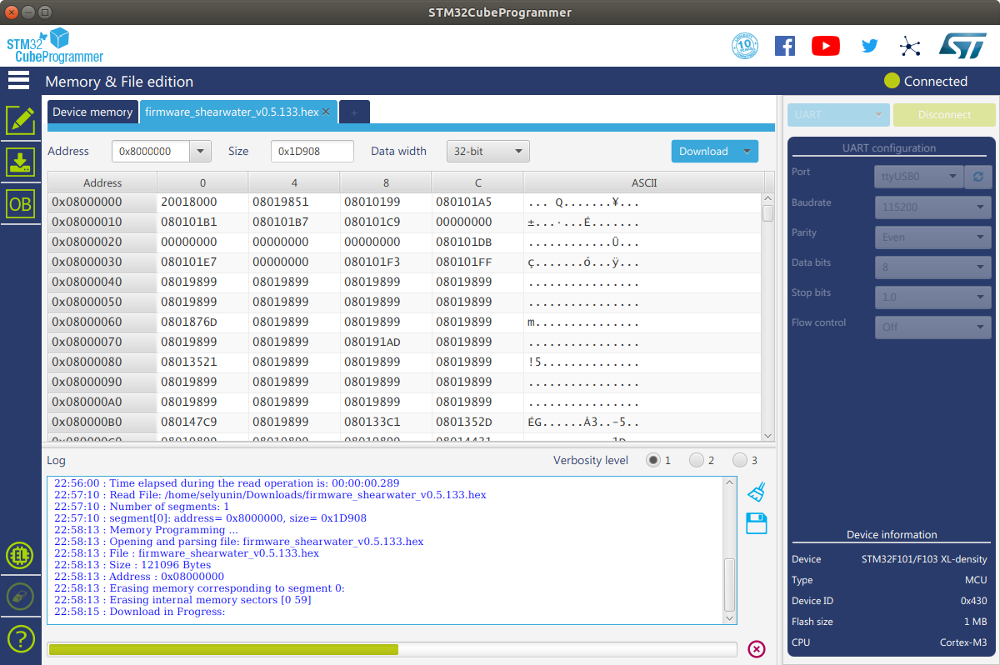

Shearwater HowTo¶
Table of Contents
In this document we describe a step-by-step guide to get started with the shearwater board.
For this guide we assume that a user is on the Linux (e.g. Ubuntu, Suse, etc.) distribution
and has access to the available command-line utilities. Administrative access is a plus and might
be required when access to the serial is restricted on the system.
In order to get started one needs:
a
shearwaterboard;a Linux PC with Python >=3.6 (preferably 3.7+) installed;
STM32CubeProgrammer software from ST for the firmware update;
firmware file (e.g.
firmware_shearwater_v0.5.133.hexor some newer version);an archive with
rsl_chartsGUI tool (e.g.rsl_charts_v0-2-12.tar.gzor some other version) or access to thersl_chartsrepository. Do not worry if you do not have access to the repo, after polishing we will make it public. The*.tar.gzarchives are created by our CI pipelines, and are tested before packaging. Of course, tests can never proof the absence of bugs, but only their presence, but this is a good initial sign.
0. Getting started plan¶
In order to get started we are going to follow the steps below:
Update the
shearwaterboard to the newest firmware version using the STM32CubeProgrammer;Check the serial connection between the board and PC using minicom and/or python;
Get
um7pydriver running for theshearwaterwith the provided examples;Run
rsl_chartsGUI application for visualizing and recording sensor data.
1. Updating shearwater firmware¶
The shearwater uses the STM32 MCU; we use the official tool from ST to flash the firmware to the board
(and update the board’s firmware to the latest version).
1.1 Download the STM32CubeProgrammer¶
Download the tool from the ST website using the following link: STM32CubeProgrammer. It might happen, that ST policy require to login to their website (or create an account first) in order access the download link.
1.2 Install the STM32CubeProgrammer¶
As of 2.03.2021, the STM32CubeProgrammer tool is version 2.6.0 has been tested. The tool will be downloaded as a *.zip archive, which will contain installation files after extraction.
After downloading the tool, install the STM32CubeProgrammer on the Linux (or Windows) machine.
For the installation, navigate to the folder and run the SetupSTM32CubeProgrammer-{version}.linux executable.
During the installation process the tool asks for the installation directory, where it unpacks the binaries
and libraries. We will refer to this directory as STM32CubeProgrammer_ROOT.
To follow along the rest of this section, navigate to the STM32CubeProgrammer_ROOT folder, e.g. in your terminal:
cd /path/to/installed/stm32cubeprogrammer
Note for Ubuntu users: the tool itself is java-based, and it requires oracle jdk (does not run with openjdk), so I needed also to install the jdk from here:
https://www.oracle.com/java/technologies/javase-jdk8-downloads.html
1.3 Updating the shearwater firmware¶
The STM32CubeProgrammer is available both as a GUI application and a command-line utility. In the following we cover both ways of using the tool for updating the firmware.
1.3.1 Putting shearwater to the bootloader mode¶
Important: before updating the shearwater we need to put it in a boot mode.
In order to put the shearwater to the boot mode, do the following:
Disconnect the board from power supply;
Press and hold the blue “BOOT MODE” button on the board;
While the button is pressed, connect the
shearwaterboard to PC (i.e. the board shall be powered when the button is pressed down).
If done correctly, no LEDs should light on the board. If so, congratulations, you put the shearwater
board in the boot mode! Keep up the good work!
If after this procedure the green LED is still on when the board is powered, then repeat the procedure above. The key point here is to keep the button pressed when connecting the board to power supply.
1.3.2 Updating shearwater firmware using CLI¶
In this section we cover updating the shearwater firmware using the CLI version of the STM32CubeProgrammer tool.
From your STM32CubeProgrammer_ROOT directory navigate to the folder with STM32_Programmer_CLI executable:
cd bin
1.3.2.1 Query available interfaces¶
We can list available interfaces for the tool with the command (note, this step is optional):
./STM32_Programmer_CLI --list
We need to identify as which serial port (or USB over serial) the shearwater is associated with on the PC.
For this one can execute the --list command twice, when the board is disconnected and when the board is connected,
and identify the port of the shearwater. Note, when using the USB2Serial converter (which uses the FTDI chip),
the port which has the FTDI as manufacturer in its description is high probably the shearwater port.
Assuming we found that the shearwater board is connected to the /dev/ttyUSB0 port (the port name might be
different in your case!), we proceed further.
1.3.2.2 Connect to port¶
Using the command below we connect to the previously identified port (note, this step is optional):
./STM32_Programmer_CLI --connect port=/dev/ttyUSB0
If the connection is successful, the tool reports Activating device: OK as well as device name and its properties.
1.3.2.3 Flash the firmware file¶
We flash the firmware file to the board using the following command:
./STM32_Programmer_CLI --connect port=/dev/ttyUSB0 --download /path/to/your/firmware_shearwater_v0.5.133.hex
Important: replace the /dev/ttyUSB0 with your port, and the /path/to/your/firmware_shearwater_v0.5.133.hex
with your path to the firmware file (relative or absolute path both OK).
When done correctly, the tool outputs status text and a progress bar, and reports a status after the update.
If you see as output “File download complete”, then congrats – you updated the firmware!
Then unplug the power of the shearwater, and connect it to power, if you see at startup the red, 2 yellow, and green
LED is on for a short time, and then the green LED on, congrats again – the firmware is actually updated!
Important: If you encountered a problem, do not hesitate to contact us with the section reference when failed, and short description of your problem. We are keen to improve our documentation and make the getting started as flawless as possible. Please help us make this process as smooth as possible. Your input is highly appreciated!
1.3.3 Updating shearwater firmware using GUI¶
In this section we cover updating the shearwater firmware using the GUI version of the STM32CubeProgrammer tool.
Before proceeding further, followed the procedure in 1.3.1 and put the shearwater board in the “BOOT MODE”.
From your STM32CubeProgrammer_ROOT directory launch the GUI executable STM32CubeProgrammer:
./bin/STM32CubeProgrammer
The following GUI window opens:
{kind=link}
Select the port where the shearwater board is connected and press
the green “Connect” button on the right side of the GUI application:
{kind=link}
When successfully connected, click “Open File”, and select the provided firmware file:
{kind=link}
When the firmware is loaded in the GUI, press the blue “Download” button
{kind=link}
When download is complete, the following pop-up window is shown:
{kind=link}
If you see a pop-up window “File download complete” (as on the figure above), then congrats – you updated the firmware!
Then unplug the power of the shearwater, and connect it to power, if you see at startup the red, 2 yellow, and green
LED is on for a short time, and then the green LED on, congrats again – the firmware is actually updated!
Important: If you encountered a problem, do not hesitate to contact us with the section reference when failed, and short description of your problem. We are keen to improve our documentation and make the getting started as flawless as possible. Please help us make this process as smooth as possible. Your input is highly appreciated!
We now proceed to the second step of our tutorial, checking serial communication with minicom.
2. Check serial communication with minicom / python¶
When the shearwater board runs normally, it sends broadcast messages over serial.
In this part of the tutorial, we use a utility minicom to read from the serial port, or Python’s pyserial
module in order to ensure the bytestream is coming and we are able to receive the data from the board.
This means one can either double-check bytestream with minicom, or use pyserial.
After updating the firmware file, the default baud rate is 115200.
This part of the tutorial is optional, although it makes it easier to identify and fix possible HW / SW problems.
In order to be able to read from serial port without the admin privileges, a user needs to be part of the dialout group.
2.1 Reading sensor byte stream with minicom¶
Using minicom one can read from a port to the file using the following command:
minicom -D /dev/ttyUSB0 -b 115200 -C minicom.log
Run the command above and observe byte stream of binary data displayed on the display. In order to quit the minicom utility,
press Ctrl + A and then Q. Check the created minicom.log for content. If the file is non-empty and connect the
binary data (in particular if you can spot the snp (snp stands for the Start New Packet)
strings in the binary stream here and there), then you can successfully read the shearwater broadcast messages, congrats!
This means your hardware and software is setup correctly, and as a next step we will use the um7py python driver
to communicate with the board, change board configuration, and decode the sensor broadcast messages, like the ones
recorded in the log file.
2.2 Reading sensor byte stream with python¶
Alternative to using the minicom utility from section 2.1, we can use the python, and in particular the
pyserial module to read out low-level byte stream from the shearwater board.
For the rest of this section I will use miniconda for managing python environments.
Miniconda can be installed freely from the web under the following link: miniconda.
If you do not like / do not want to use miniconda, you can achieve the same results of installing
a custom python version and python dependencies using python virtual environment venv.
We will not cover this in the tutorial.
2.2.1 Creating miniconda environment¶
First, we create a new conda environment called shearwater with python version 3.8:
conda create -n shearwater python=3.8
2.2.2 Activating the shearwater environment¶
We now can activate the shearwater environment, in order to use python and pip which we have installed:
conda activate shearwater
2.2.3 Installing the pyserial package¶
We now need to install the pyserial package, in order to communicate over the serial port with python:
pip install pyserial
2.2.4 Reading bytestream data with python¶
We now have our python interpreter ready to read the byte stream which the shearwater board is broadcasting.
If the shearwater is connected to the /dev/ttyUSB0 port, we then can read the byte stream from python as follows:
import serial
port = serial.Serial(port='/dev/ttyUSB0', baudrate=115200) # create serial port object
port.read(1000) # Read 1 kByte of sensor data, binary data should appear in console
b'snp' in port.read(1000) # -> True, "snp" header is present in the binary data
Launch the python interpreter, and paste the above snippet.
If you see a 1 kByte of sensor data stream, and the “True” as a value of the last expression: success! You are
able to read the byte stream from the shearwater board using python.
This means your hardware and software is setup correctly, and as a next step we will use the um7py python driver
to communicate with the board, change board configuration, and decode the sensor broadcast messages, which we were
able to see in the console.
If you did not manage to achive this, there might be a handful of reason why something failed. Hardware and Software
needs to be configured properly. If you do not see the byte stream, check if you are a member of the dialout group,
or if you have rights to read/write serial port in general. Check that you selected the port correctly. Check that the
board is powered and the green LED on the board is on.
If you still have a problem, do not hesitate to contact us, describe us your problem and what has gone wrong.
We will be glad to extend the documentation and make the getting started process as smooth as possible.
3. Running shearwater driver with examples¶
In this section we use the um7py python driver to read the broadcast messages, board’s data and configuration
registers, and send commands to the board. The um7py python driver is included in the
rsl_charts_v{version}.tar.gz archive.
The rsl_charts GUI application has the following high-level structure:
rsl_data_acquisitioncontains code to handle plotting buffers;rsl_qtcontains code for creating plotting windows;um7pycontains python driver for communication withshearwater;examplesis a set of examples to illustrate the functionality of the python driver;rsl_xml_svdcontains XML description of the register map for theshearwater;um7pycontains the code to communicate with theshearwater;
From the above structure the rsl_charts/um7py directory is of interest in this part of the tutorial.
We refer to the rsl_charts/um7py directory as UM7_ROOT.
3.1 Adding packages to the python path¶
As we have seen in the repo description above, the rsl_charts and um7py packages have hierarchical structure,
these contain and use other packages defined below in the hierarchy.
We need to communicate paths of these packages to python, s.t. it is able to correctly resolve the imports.
First, navigate to the UM7_ROOT folder and execute the following command in the terminal:
export PYTHONPATH=$PYTHONPATH:`pwd`:`realpath rsl_xml_svd`:`realpath um7py`
3.2 Running examples with the port_name argument¶
We now navigate to the UM7_ROOT/examples directory and run some of the available examples.
The provided examples use the concept of the device file, which is a file specifying parameters of the
USB descriptors, and the python driver searches for device which matches the parameters from the file.
This eliminates the need to change the code when the sensor appears under different port, when the board
was re-plugged, since during the connection procedure we are searching for device with specified properties.
We will take a look how to create such a file later in the guide.
For now, in order to get started as quick as possible, we use the serial port (e.g. /dev/ttyUSB0) directly.
As the first, we modify and run the example example_shearwater_dregs.py.
This example will read the sensor data registers, one-by-one.
Before running the example, we need to modify the source code of the example file first.
Open the file in the text editor, and replace the line (line 24):
shearwater = ShearWaterSerial(device=device_file)
with the following line (use your serial port):
shearwater = ShearWaterSerial(port_name='/dev/ttyUSB0')
Now run the example with python:
python example_shearwater_dregs.py
If successful, you see console output of reading shearwater data registers and their decoded values.
Congratulations, you are able to successfully read and decode the shearwater register values!
With the method described above, experiment with other provided examples: always change the line of creating the
ShearWaterSerial(device=device_file) object to use the ShearWaterSerial(port_name='/dev/ttyUSB0') first,
where the port_name is the port where your shearwater board is connected to.
If you encounter an error, please let us know.
3.3 Running examples with the device argument¶
In the previous section, we run the shearwater examples using the port_name argument, and connecting
to the serial port directly. This has a following limitation: whenever you re-plug / reboot your PC, it might
happen that the serial port name, to which the shearwater is connected is changed.
E.g. if you use USB2Serial FTDI converter, it might happen that after re-plug the port name changes to the
/dev/ttyUSB1, and then when PC is re-booted, it changes back to /dev/ttyUSB0. This means one needs to
identify first to which port the board is connected, and then change the source code each time.
When using the FTDI converter, we can avoid this problem: we create a so-called device file, where we store the parameters of the FTDI USB IDs, and then search for port which has the matching IDs. In this part of the tutorial we will create the device file, and use it as argument in the examples.
In order to create the device file, disconnect all the devices from the serial port, except the shearwater board.
The shearwater board shall be connected.
Before creating the device file, we need to make sure that the packages are included in the python path.
This is described in the section 3.1 of this tutorial.
When packages are added to the python path, we navigate to the $UM7_ROOT/um7py directory:
cd rsl_charts/um7py/um7py
We use the file um7_autodetect.py in this directory.
On a Linux system we need to install the pyudev package:
python -m pip install pyudev
First, run the help on the um7_autodetect.py, a useful description of the utility is printed to the console:
./um7_autodetect.py --help
When the shearwater board is connected to the PC via the USB2Serial converter, we can generate the device
file using the autodetect file:
./um7_autodetect.py --help
The um7_[serial].json is now generated in the current directory.
We can use this file to connect to the shearwater board instead of specifying the port_name.